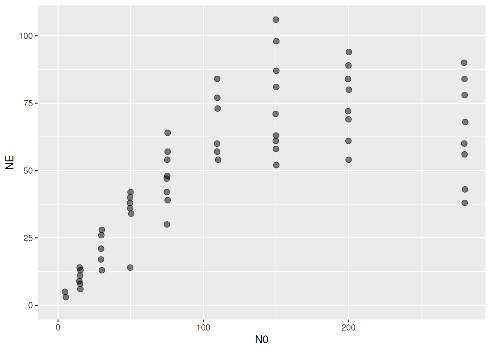
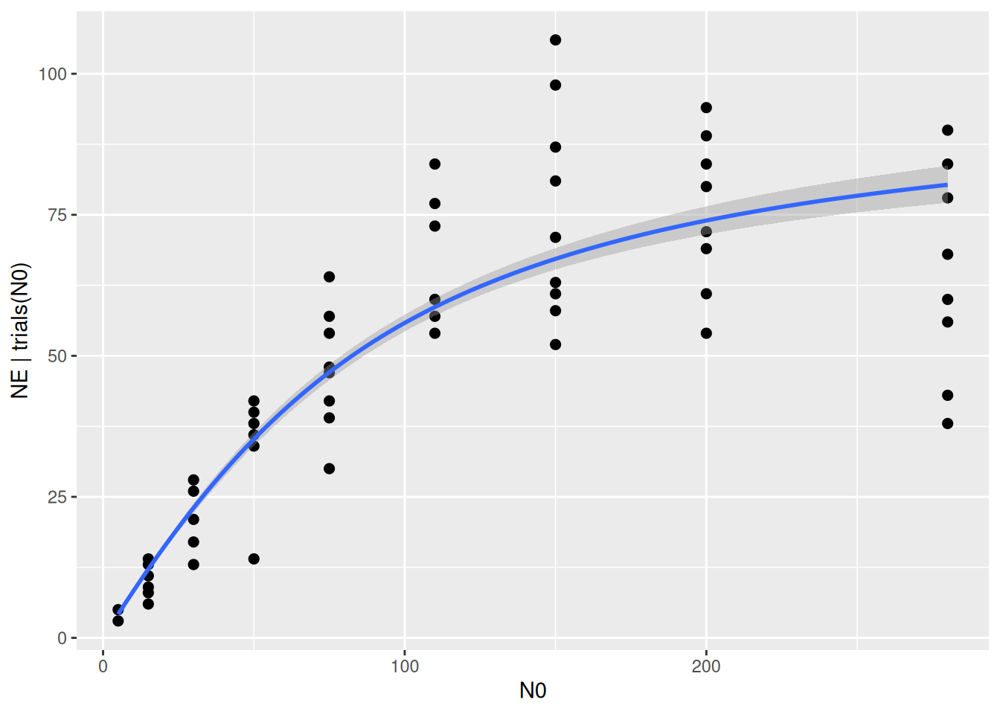
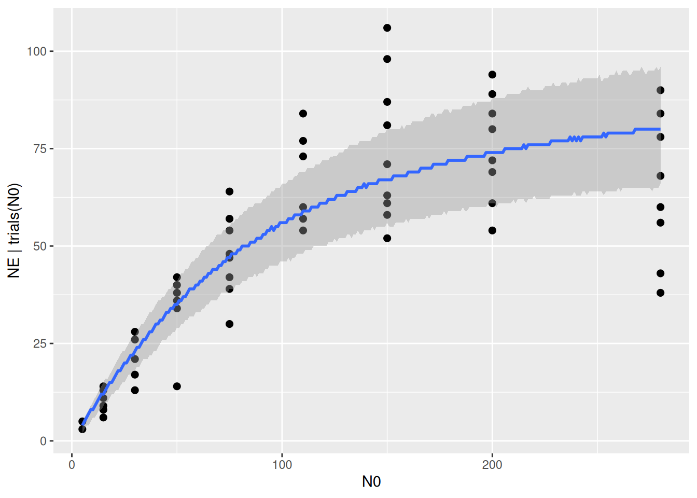
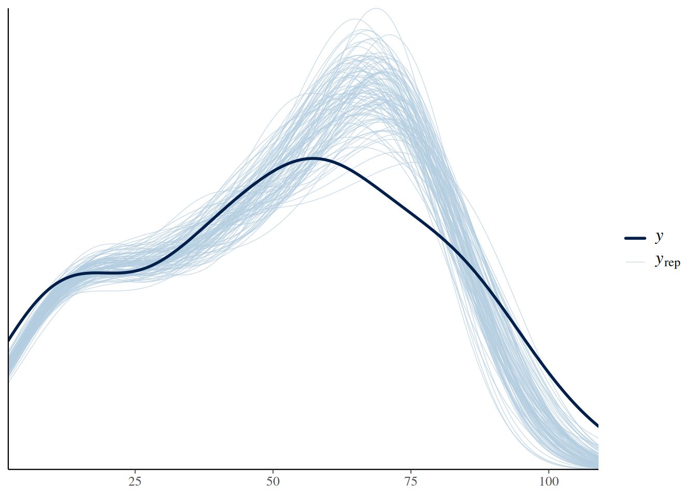
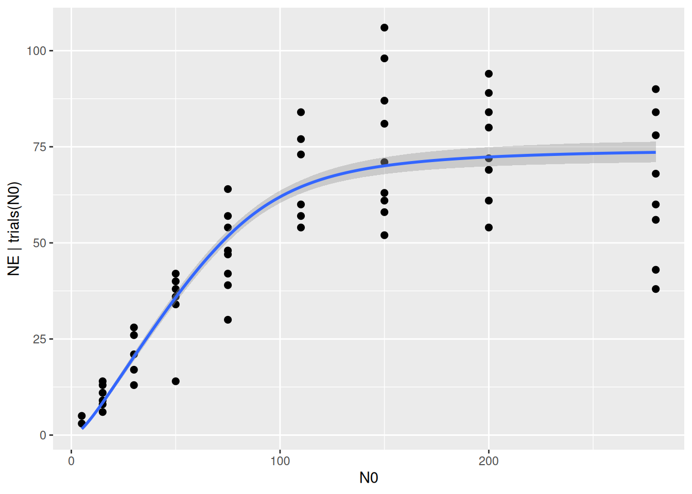
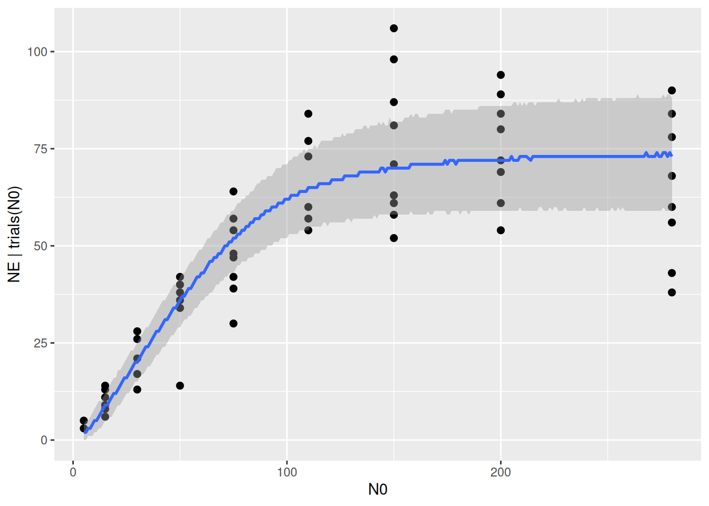
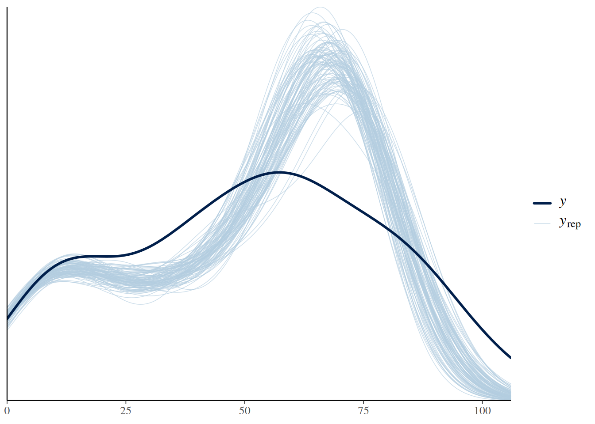
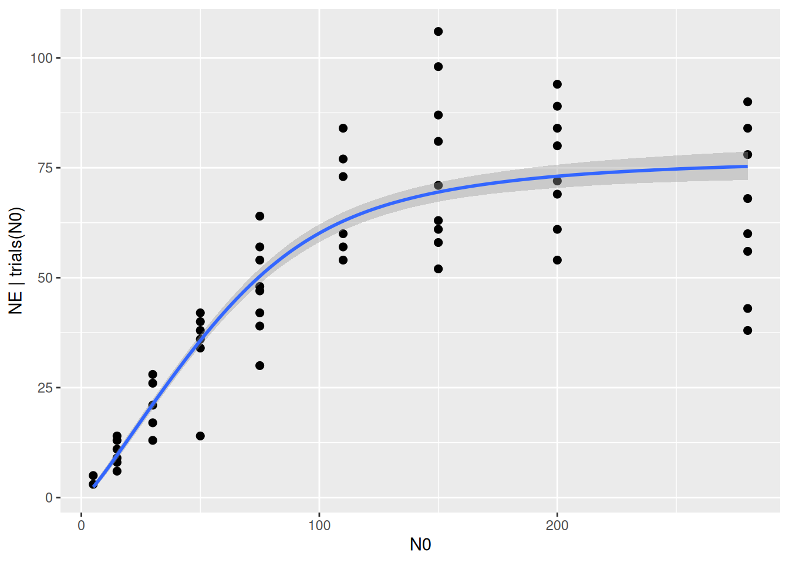
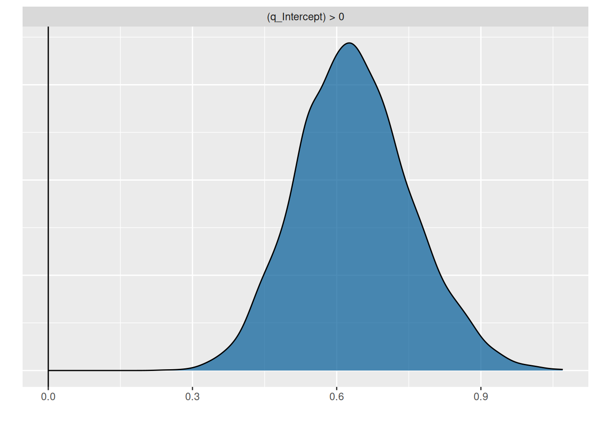
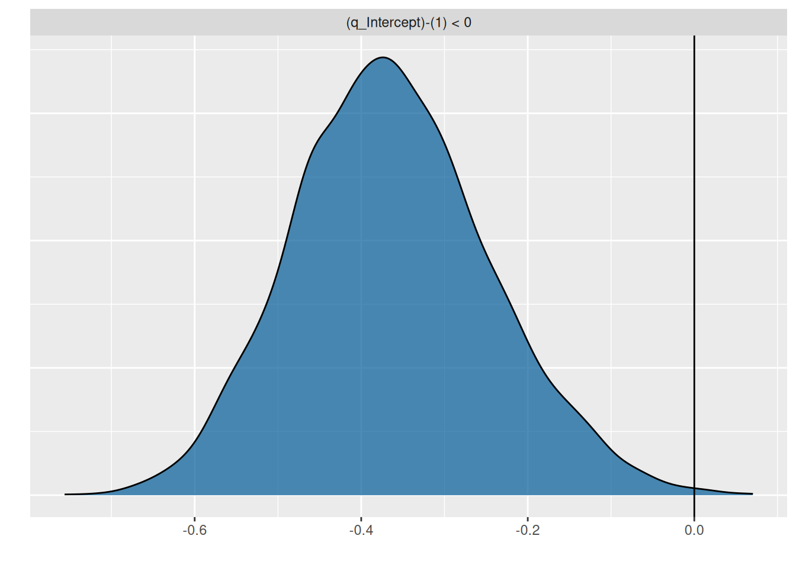

rm(list=ls())
library(BayesFR)
library(brms)
library(ggplot2)3. Model checking, model comparison, hypothesis testing: type 2 vs type 3 responses
Using an example of fitting a type 2 vs. a type 3 FR, this section describes tools for
- model checking (Does the model describe the data well?)
- model comparison (Which model describes the data better?)
- and hypothesis testing (How certain is the model about research statements?)
The dataset is from Sentis et al. (2017), was made available in the FoRAGE database (Uiterwaal et al. 2022), and contains three aquatic insect larvae predators feeding on Daphnia prey in two temperature treatments. Eaten prey were not replaced. We are using the predator S. vulgatum at 16??C.
data(df_Sentis_et_al_2017_GLOBAL_CHANGE_BIOLOGY)
df = subset(df_Sentis_et_al_2017_GLOBAL_CHANGE_BIOLOGY, ID=="Figure 1e")
head(df) N0 NE Time Predator Prey ID Temperature
226 5 3 6 Sympetrum vulgatum Daphnia magna Figure 1e 16
227 5 5 6 Sympetrum vulgatum Daphnia magna Figure 1e 16
228 15 6 6 Sympetrum vulgatum Daphnia magna Figure 1e 16
229 15 8 6 Sympetrum vulgatum Daphnia magna Figure 1e 16
230 15 9 6 Sympetrum vulgatum Daphnia magna Figure 1e 16
231 15 11 6 Sympetrum vulgatum Daphnia magna Figure 1e 16ggplot(aes(N0,NE), data=df) +
geom_jitter(alpha = 0.5, width=0.5, height=0, size=2.5) +
coord_cartesian(xlim=c(0,NA), ylim=c(0,NA))
Model checking
We start with fitting a type 2 FR using the dynamical prediction model and a Binomial distribution as described in the last section. \[\frac{aN}{1+ahN}\]
FR.formula = bf( NE | trials(N0) ~ Type2H_dyn(N0,1.0,1.0,a,h)/N0,
a~1, h~1,
nl = TRUE)
FR.priors = c(prior(exponential(1.0), nlpar="a", lb=0),
prior(exponential(1.0), nlpar="h", lb=0)
)
fit.type2 = brm(FR.formula,
family = binomial(link="identity"),
prior = FR.priors,
data = df,
cores = 4,
stanvars = stanvar(scode=Type2H_dyn_code, block="functions")
)
expose_functions(fit.type2, vectorize=TRUE)
summary(fit.type2) Family: binomial
Links: mu = identity
Formula: NE | trials(N0) ~ Type2H_dyn(N0, 1, 1, a, h)/N0
a ~ 1
h ~ 1
Data: df (Number of observations: 58)
Draws: 4 chains, each with iter = 2000; warmup = 1000; thin = 1;
total post-warmup draws = 4000
Regression Coefficients:
Estimate Est.Error l-95% CI u-95% CI Rhat Bulk_ESS Tail_ESS
a_Intercept 1.91 0.10 1.72 2.12 1.00 1166 1780
h_Intercept 0.01 0.00 0.01 0.01 1.00 1201 1547
Draws were sampled using sampling(NUTS). For each parameter, Bulk_ESS
and Tail_ESS are effective sample size measures, and Rhat is the potential
scale reduction factor on split chains (at convergence, Rhat = 1).The brms package contains some functions for checking how well the model describes the data. We already learned about conditional_effects(), which here plots the mean regression curve and its 95% credible intervals. As default, just the deterministic model part is used, which is the mean number of eaten prey NE predicted by Type2H_dyn(). The uncertainty (credible intervals) comes from the posterior distribution of model parameters a and h alone.
plot(conditional_effects(fit.type2),
points=TRUE)
The statistical model includes not only the deterministic regression, but we assumed that the data is Binomially distributed around these values. This can be specified to plot the 95% prediction intervals, including also the stochastic model part. Note that the curve below looks a bit ragged, since these predictions are integer draws from the Binomial distribution now. The intervals should contain around 95% of the datapoints. In functional response experiments, however, the data is often more noisy than predicted by the Binomial distribution: it is a bit overdispersed. We are not dealing with this right now, but the Beta Binomial distribution is described in a later tutorial on likelihood functions, if needed.
plot(conditional_effects(fit.type2,
method = "posterior_predict"),
points=TRUE)
An alternative way of displaying model predictions (including both the deterministic and the stochastic model part) against the data are posterior predictive checks. pp_check() draws a histogram (or rather a density curve) of the observed response values (number of eaten prey) in darkblue: x-axis are response values and y-axis is frequency of occurrence. Every lightblue line depicts the histogram of a replicated dataset from the model, generated with a sample of the parameters’ posterior distribution (here, ndraws=100 replicated datasets). A good alignment of observed and replicated datasets would indicate a good model fit, however there is some mismatch due to data overdispersion.
pp_check(fit.type2, ndraws=100)
Model comparison
We want to know if the data can be described better by an S-shaped type 3 FR. \[\frac{bN^2}{1+bhN^2}\]
FR.formula = bf( NE | trials(N0) ~ Type3H_dyn(N0,1.0,1.0,b,h)/N0,
b~1, h~1,
nl = TRUE)
FR.priors = c(prior(exponential(1.0), nlpar="b", lb=0),
prior(exponential(1.0), nlpar="h", lb=0)
)
fit.type3 = brm(FR.formula,
family = binomial(link="identity"),
prior = FR.priors,
data = df,
cores = 4,
stanvars = stanvar(scode=Type3H_dyn_code, block="functions")
)
expose_functions(fit.type3, vectorize=TRUE)
summary(fit.type3) Family: binomial
Links: mu = identity
Formula: NE | trials(N0) ~ Type3H_dyn(N0, 1, 1, b, h)/N0
b ~ 1
h ~ 1
Data: df (Number of observations: 58)
Draws: 4 chains, each with iter = 2000; warmup = 1000; thin = 1;
total post-warmup draws = 4000
Regression Coefficients:
Estimate Est.Error l-95% CI u-95% CI Rhat Bulk_ESS Tail_ESS
b_Intercept 0.10 0.01 0.08 0.12 1.00 2069 2033
h_Intercept 0.01 0.00 0.01 0.01 1.00 2193 2509
Draws were sampled using sampling(NUTS). For each parameter, Bulk_ESS
and Tail_ESS are effective sample size measures, and Rhat is the potential
scale reduction factor on split chains (at convergence, Rhat = 1).Again, we have a look at the diagnostics plots.
plot(conditional_effects(fit.type3),
points=TRUE)
plot(conditional_effects(fit.type3,
method = "posterior_predict"),
points=TRUE)
pp_check(fit.type3, ndraws=100)
Like the type 2, the type 3 FR has a bit of a problem with overdispersion. But which one describes the data better? It is possible to compute R2 values, describing the amount of explained variation in the response. However, in this nonlinear modeling framework with non-Gaussian distributions, this measure has limited informative value. E.g., R2 weighs deviations at small N0 values equally as deviations at large N0, and ignores the fact that the Binomial distribution accounts for small variance at lower and larger variance at higher N0.
bayes_R2(fit.type2) Estimate Est.Error Q2.5 Q97.5
R2 0.7308091 0.006653965 0.7165039 0.7424464bayes_R2(fit.type3) Estimate Est.Error Q2.5 Q97.5
R2 0.7693118 0.008094975 0.7526063 0.7836915Much better suited would be a likelihood-based information criterion like AIC. The brms package uses the leave-one-out (LOO) cross-validation criterion from the loo-package. Very roughly speaking, LOO accounts for model fit (likelihood) and for model complexity (number of parameters) similarly as AIC. The LOO() function produces some infos on both models’ LOO values, but since LOO is a relative measure, we are only interested in the difference at the bottom of the output.
LOO(fit.type2, fit.type3)Output of model 'fit.type2':
Computed from 4000 by 58 log-likelihood matrix.
Estimate SE
elpd_loo -345.7 39.9
p_loo 13.3 2.7
looic 691.5 79.9
------
MCSE of elpd_loo is 0.1.
MCSE and ESS estimates assume MCMC draws (r_eff in [0.3, 1.0]).
All Pareto k estimates are good (k < 0.7).
See help('pareto-k-diagnostic') for details.
Output of model 'fit.type3':
Computed from 4000 by 58 log-likelihood matrix.
Estimate SE
elpd_loo -327.7 34.7
p_loo 13.0 2.8
looic 655.4 69.3
------
MCSE of elpd_loo is 0.1.
MCSE and ESS estimates assume MCMC draws (r_eff in [0.5, 0.9]).
All Pareto k estimates are good (k < 0.7).
See help('pareto-k-diagnostic') for details.
Model comparisons:
model elpd_diff se_diff p_worse diag_diff diag_elpd
fit.type3 0.0 0.0 NA
fit.type2 -18.1 18.3 0.84 N < 100
Diagnostic flags present.
See ?`loo-glossary` (sections `diag_diff` and `diag_elpd`)
or https://mc-stan.org/loo/reference/loo-glossary.html.The models are ranked by model performance: Here, the type 3 seems to be the better model, with a difference to the type 2 model of 18.1. However, the difference comes with an associated standard error 18.3 in the second column. Conventionally, one can safely assume that one model outperforms the other one, if the difference is approximately at least twice as big as the standard error. Since the estimated difference in model performance is only around one standard error here, the model comparison is inconclusive.
Hypothesis testing
While hypotheses can often be tested by comparing one model against the other as described above, we here calculate posterior probabilities of model parameters using the a generalized type 3 response as an example.
As an alternative to the classical type 2 and type 3 responses, a flexible exponent \(q\) is used to make the attack rate \(a=bN^q\) density dependent, which defines the functional response \[\frac{bN^{1+q}}{1+bhN^{1+q}}\] that generalizes the type 2 (\(q=0\)) and the type 3 (\(q=1\)).
We fit a dynamical prediction model Type3GenH_dyn() with a free parameter q. Unlike the type 2 and the strict type 3 FR, there is no analytical solution for the underlying differential equation, and the prediction model includes a numerical solution to compute number of eaten prey NE. We must specify a prior for the additional parameter q, where a lower boundary lb=-1 guarantees that the exponent 1+q stays positive.
FR.formula = bf( NE | trials(N0) ~ Type3GenH_dyn(N0,1.0,1.0,b,h,q)/N0,
b~1, h~1, q~1,
nl = TRUE)
FR.priors = c(prior(exponential(1.0), nlpar="b", lb=0),
prior(exponential(1.0), nlpar="h", lb=0),
prior(normal(0,1), nlpar="q", lb=-1)
)
fit.type3gen = brm(FR.formula,
family = binomial(link="identity"),
prior = FR.priors,
data = df,
cores = 4,
stanvars = stanvar(scode=Type3GenH_dyn_code, block="functions")
)
expose_functions(fit.type3gen, vectorize=TRUE)
summary(fit.type3gen) Family: binomial
Links: mu = identity
Formula: NE | trials(N0) ~ Type3GenH_dyn(N0, 1, 1, b, h, q)/N0
b ~ 1
h ~ 1
q ~ 1
Data: df (Number of observations: 58)
Draws: 4 chains, each with iter = 2000; warmup = 1000; thin = 1;
total post-warmup draws = 4000
Regression Coefficients:
Estimate Est.Error l-95% CI u-95% CI Rhat Bulk_ESS Tail_ESS
b_Intercept 0.31 0.11 0.14 0.58 1.00 1063 1221
h_Intercept 0.01 0.00 0.01 0.01 1.00 1188 1566
q_Intercept 0.64 0.12 0.42 0.88 1.01 1026 1194
Draws were sampled using sampling(NUTS). For each parameter, Bulk_ESS
and Tail_ESS are effective sample size measures, and Rhat is the potential
scale reduction factor on split chains (at convergence, Rhat = 1).plot(conditional_effects(fit.type3gen),
points=TRUE)
Indeed, the exponent is estimated with a mean of 0.64 and a 95% CI of [0.42, 0.88].
A model comparison reveals that this model performs better than the type 2 model, but is comparable to the type 3 model (difference is small compared to standard error).
LOO(fit.type2, fit.type3, fit.type3gen) model elpd_diff se_diff p_worse diag_diff diag_elpd
fit.type3gen 0.0 0.0 NA
fit.type3 -1.0 5.4 0.57 N < 100
fit.type2 -19.0 13.0 0.93 N < 100
Diagnostic flags present.
See ?`loo-glossary` (sections `diag_diff` and `diag_elpd`)
or https://mc-stan.org/loo/reference/loo-glossary.html.We examine this a bit more closely by calculating posterior probabilities for the parameter q_Intercept. Its 95% credible interval [0.42, 0.88] provides evidence that \(0<q<1\), but what if we want to compute posterior probabilities \(P(q>0)\) or \(P(q<1)\)? The brms function hypothesis() calculates these, simply by counting how many posterior samples satisfy the condition. It can also be used for quantities derived from the parameters or for predictions, but here we simply ask if the parameter is positive:
hypothesis(fit.type3gen, "q_Intercept>0")Hypothesis Tests for class b:
Hypothesis Estimate Est.Error CI.Lower CI.Upper Evid.Ratio Post.Prob
1 (q_Intercept) > 0 0.64 0.12 0.45 0.84 Inf 1
Star
1 *
---
'CI': 90%-CI for one-sided and 95%-CI for two-sided hypotheses.
'*': For one-sided hypotheses, the posterior probability exceeds 95%;
for two-sided hypotheses, the value tested against lies outside the 95%-CI.
Posterior probabilities of point hypotheses assume equal prior probabilities.p = plot(hypothesis(fit.type3gen, "q_Intercept>0"), plot=FALSE)
p[[1]] + geom_vline(xintercept=0)
The information we seek is in the column Post.Prob, based on the model fit we are 100% certain that \(q>0\). The plot also shows the posterior distribution does not include 0.
Testing against values different from 0, hypthesis() re-arranges the output a bit.
hypothesis(fit.type3gen, "q_Intercept<1")Hypothesis Tests for class b:
Hypothesis Estimate Est.Error CI.Lower CI.Upper Evid.Ratio
1 (q_Intercept)-(1) < 0 -0.36 0.12 -0.55 -0.16 443.44
Post.Prob Star
1 1 *
---
'CI': 90%-CI for one-sided and 95%-CI for two-sided hypotheses.
'*': For one-sided hypotheses, the posterior probability exceeds 95%;
for two-sided hypotheses, the value tested against lies outside the 95%-CI.
Posterior probabilities of point hypotheses assume equal prior probabilities.p = plot(hypothesis(fit.type3gen, "q_Intercept<1"), plot=FALSE)
p[[1]] + geom_vline(xintercept=0)
Here, we are also certain that \(q<1\).
With the same syntax it is possible to compute, e.g., \(P(q>0.1)\) or \(P(q<0.9)\), however there is currently no option in hypothesis() to compute probabilities of two-sided intervals such as \(P(0.1<q<0.9)\). For this, we can extract the posterior samples and calculate it manually.
draws = as.data.frame(fit.type3gen)
n = nrow(draws)
head(draws) b_b_Intercept b_h_Intercept b_q_Intercept lprior lp__
1 0.4201040 0.01278164 0.5328915 -1.321057 -323.7460
2 0.3416763 0.01275189 0.5832910 -1.270727 -323.2744
3 0.1666382 0.01318282 0.8201688 -1.262344 -324.3689
4 0.2262082 0.01300660 0.7195290 -1.244261 -323.4775
5 0.3656937 0.01297189 0.5692505 -1.286873 -323.8648
6 0.3212436 0.01199407 0.5509278 -1.231183 -326.8363Each row in the dataframe draws contains a multivariate sample of the posterior, and each column contains all posterior samples for a specific model parameter. Notice how the parameter \(q\) is named b_q_Intercept. brms internally puts b_ in front of a parameter name if it is an effect size, and _Intercept after the parameter name to indicate that it is the effect size of the intercept and not of another predictor (we don’t have additional predictors here).
We just have to count how many samples satisfy a condition and divide by the total number of samples, which computes the posterior probability. Multiple conditions can be combined with the logical AND operator & to compute, e.g., \(P(0.1<q<0.9)=P(q>0.1\ \text{AND}\ q<0.9):\)
sum(draws$b_q_Intercept>0.1)/n[1] 1sum(draws$b_q_Intercept<0.9)/n[1] 0.9825sum(draws$b_q_Intercept>0.1 & draws$b_q_Intercept<0.9)/n[1] 0.9825